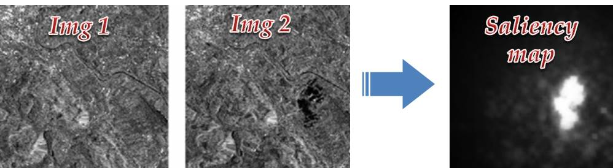

Saliency guided SAR image change detection
Last modified: 24, March, 2017
Feng Gao, Xiao Wang, Muwei Jian, Junyu Dong
Inspired by Zheng¡¯s work [3], we aim to design a scheme for SAR image change detection based on saliency analysis.
Problem 1: How to automatically find out and locate the interest (informative and discriminative) regions?
Problem 2: Which kind of feature can be used as a prior knowledge to guide the change detection of SAR images?

Links to most related works
- Muwei Jian, Kin-Man Lam, Junyu Dong, Linlin Shen, "Visual-patch- attention-aware Saliency Detection", IEEE Transactions on Cybernetics, VOL. 45, NO. 8, pp. 1575-1586, 2015.
- Muwei Jian, Qiang Qi, Junyu Dong, Xin Sun, Yujuan Sun, and Kin-Man Lam. Saliency Detection Using Quaternionic Distance Based Weber Descriptor and Object Cues, APSIPA 2016.
- Yaoguo Zheng et al. Unsupervised saliency-guided SAR image change detection. Pattern Recognition, 2017.
- Shaona Wang, Shuyuan Yang, Licheng Jiao. Saliency-guided change detection for SAR imagery using a semi-supervised Laplacian SVM. Remote Sensing Letters. 2016
>> return to Feng Gao's homepage